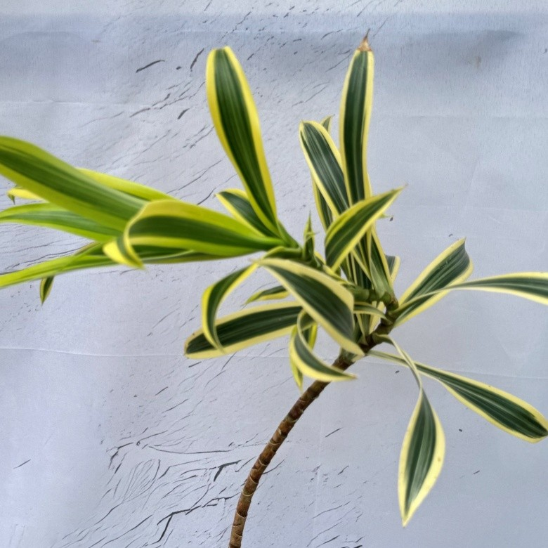
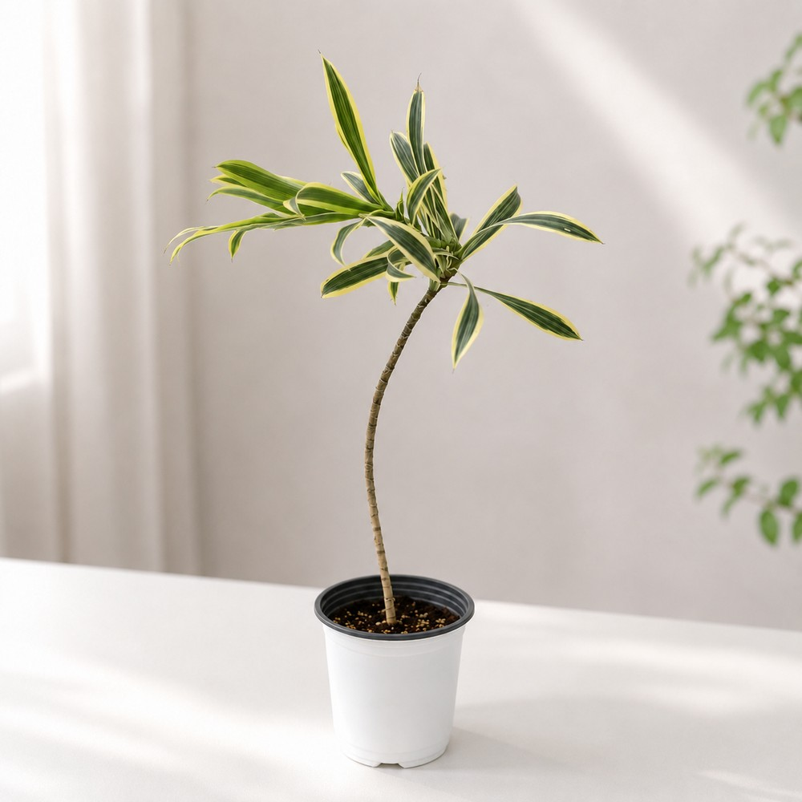

초록 잎에 노란 무늬가 어우러진

길쭉한 초록 잎에 노란 무늬가 더해진 관엽식물입니다.
줄기 끝으로 모여 자라는 잎과 자연스러운 수형을 감상해 보세요.
밝은 간접광이 드는 거실이나 창가 안쪽 공간에 두기 좋습니다.




높이: 50~55cm
화분 지름: 15cm
구성: 송오브인디아 1개
빛
밝은 간접광이 드는 곳에 두고, 한여름의 강한 직사광선은 피해 주세요.
물
흙 표면이 마른 것을 확인한 뒤 물을 주고, 화분에서 물이 잘 빠지도록 해 주세요. 받침에 고인 물은 비우고, 겨울에는 물 주는 양과 횟수를 줄여 주세요.
온도
따뜻한 실내에서 관리하고, 겨울철 찬바람이 직접 닿는 자리는 피해 주세요.
통풍
공기가 부드럽게 순환하는 곳에 두고, 냉난방기 바람이 직접 닿지 않도록 해 주세요.
식물 특성상 잎 무늬, 색감, 줄기 수형은
개체마다 조금씩 다를 수 있습니다.
먹는 식물이 아닙니다.
반려동물과 어린이가 잎을 뜯거나 섭취하지 않도록 주의해 주세요.